Скачать и запустить
В архиве всё нужное: программа на Python, SQL-скрипты, документация и снимки экрана. Установка не требуется: распаковать и запустить.
⬇ Самораспаковывающийся архив (.exe)Windows: запустить, выбрать папку ⬇ Обычный архив (.zip)то же содержимоеФайл .exe не подписан, поэтому Windows может показать предупреждение SmartScreen: «Подробнее» → «Выполнить в любом случае». Если это неудобно, берите .zip.
Что это
Кассы должны отказывать в продаже товара, которого нет на остатке. Для этого back-office должен отдавать остаток мгновенно. Остаток хранится в таблицах TXSLD и TSLD, их нужно один раз пересчитать и затем поддерживать триггером.
Утилита ведёт весь перенос по шагам: ставит новый пакет PKG_SLD_UTIL, закрывает проводки, пересчитывает сальдо, включает онлайн-запись, перенастраивает задания и сверяет результат. На каждом шаге видно точный SQL, результат и текущий статус.
Быстрый старт
- Установите Python 3.8+ для Windows (python.org). Дополнительные пакеты не нужны.
- Убедитесь, что на компьютере есть Oracle sqlplus (любой клиент 11g–19c).
- Скачайте архив и распакуйте в любую папку. Получится папка
sld-migrator. - Откройте
sld_migrator\sld_migrator.iniв Блокноте и заполните: путь кsqlplus, для каждого профиля —dsn(адрес базы),userиexpected_host(имя сервера базы). - Запустите
sld_migrator\run.bat. - Выберите профиль TEST, нажмите «Подключиться», введите пароль.
- Идите по шагам сверху вниз: выбрать шаг с пометкой «вы здесь» → прочитать описание → «Выполнить шаг».
expected_host: выполните в базе select sys_context('USERENV','SERVER_HOST') from dual;. Утилита сверяет это имя при каждом запуске и отказывается работать, если подключилась не к той базе.Что в архиве
| Папка / файл | Что это |
|---|---|
sld_migrator\sld_migrator.py | программа: окно, запуск процессов, монитор, встроенный веб-сервер |
sld_migrator\steps.py | каталог шагов и проверок с SQL |
sld_migrator\webdocs.py | встроенные HTML-страницы: документация и карта процесса |
sld_migrator\sld_migrator.ini | настройки: sqlplus, профили баз, пороги проверок. Паролей в файле нет |
sld_migrator\run.bat | запуск |
sld_migrator\selftest_demo.py | автоматический сухой прогон на тестовой базе со снимками экрана |
scripts\00…08, 99 | SQL-скрипты миграции. Утилита читает из них код пакета (02, 03); остальные — тот же порядок для ручного запуска |
docs\ | это руководство, полная документация, карта процесса, снимки экрана |
Как выглядит работа: снимки экрана
Снимки сняты во время сухого прогона на тестовой базе. Щелчок по снимку открывает его в полном размере.
Шаг 1. Запуск
После run.bat открывается окно. Слева все шаги миграции по этапам, справа описание выбранного шага. Зелёная полоса сообщает, что включён сухой прогон: база не меняется.

Шаг 2. Подключение
Выберите профиль, нажмите «Подключиться», введите пароль. Метка станет зелёной для тестовой базы и красной для продуктивной.

Шаг 3. Предпроверка
Шаг P0 запускает все проверки. Результат каждой строки виден в нижнем окне шага.
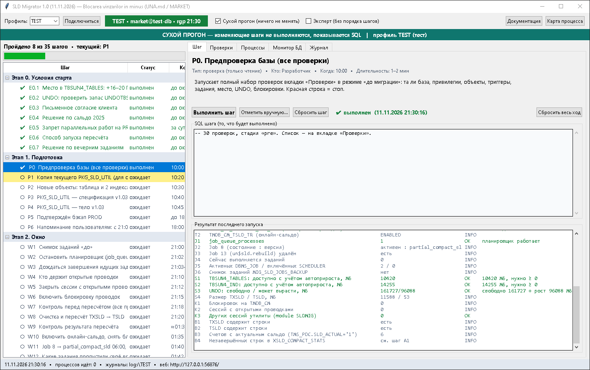
Вкладка «Проверки»
36 проверок: рабочее место, та ли база, права, объекты, триггеры, задания, место, блокировки, сальдо. Красная строка означает «стоп».

Установка пакета
Перед установкой утилита сравнивает код в базе с файлом. Если код совпадает, установка пропускается.
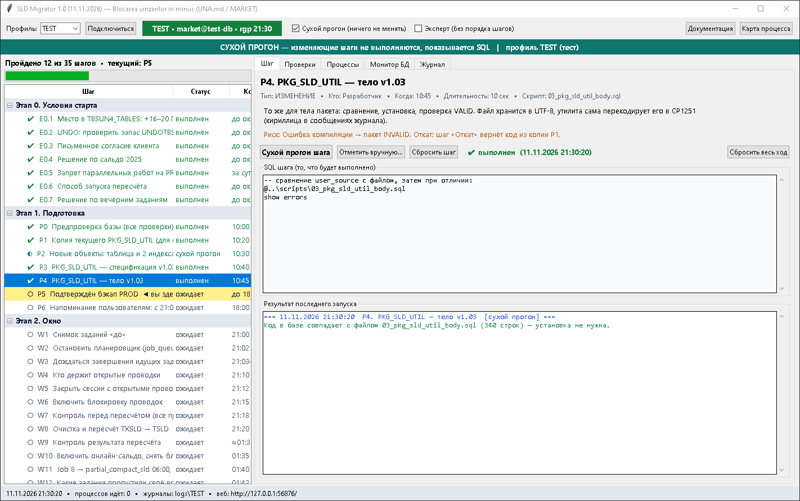
Изменяющий шаг в сухом прогоне
SQL показан серым и не выполняется. Выполняется только контрольный запрос на чтение.
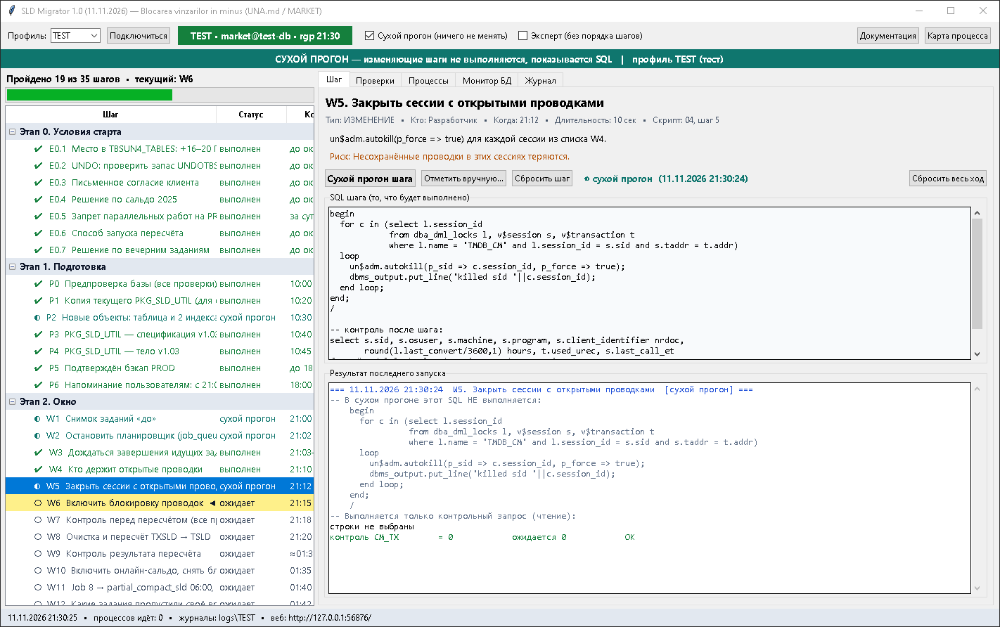
Длительный шаг
Пока шаг идёт, окно не блокируется: можно открывать другие вкладки.
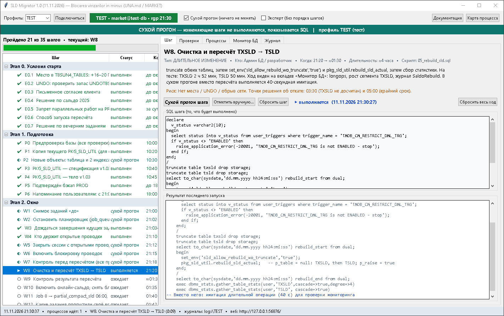
Вкладка «Монитор БД»
Состояние базы, сессии утилиты, процент выполнения длительных операций и журнал пересчёта. Обновляется каждые 10 секунд.

Вкладка «Процессы»
Каждый запуск — отдельный процесс: PID, время, статус, вывод на лету и кнопка остановки.

Карта процесса в браузере
Кнопка «Карта процесса» открывает схему: зачем нужна миграция, окно по часам и все шаги. Текущий шаг помечен «ВЫ ЗДЕСЬ».
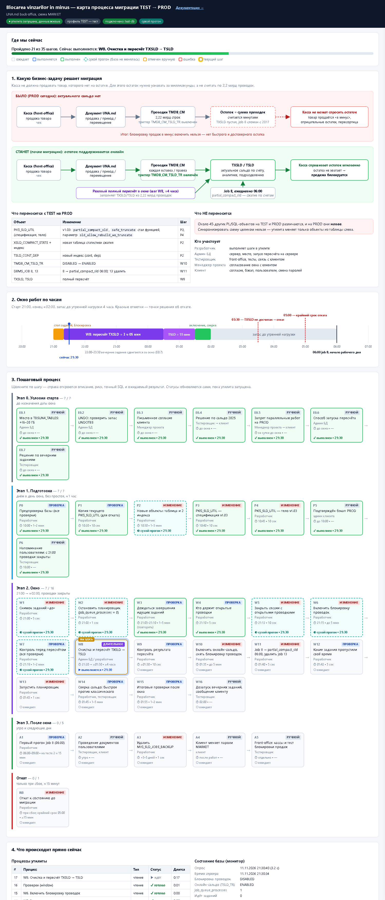
Подробности шага на карте
Щелчок по шагу открывает описание, риск и точный SQL.
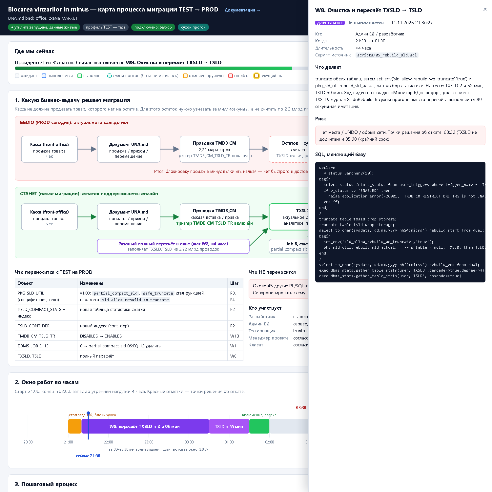
Монитор во время сверки
Сессия утилиты видна в базе вместе с шагом, который она выполняет.
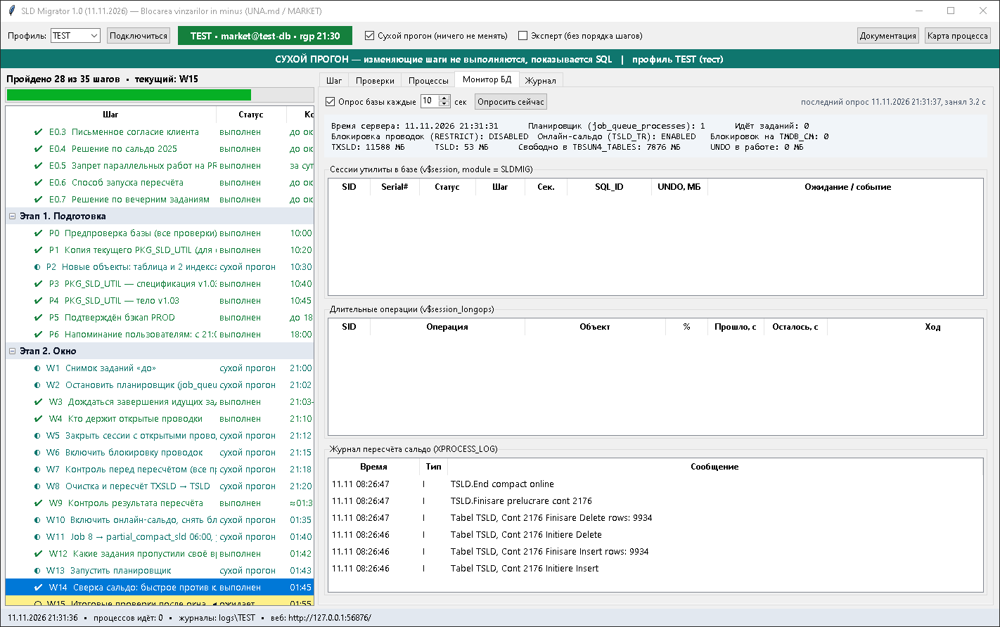
Сверка сальдо
Шаг W14 считает сальдо двумя способами и сравнивает построчно. Ожидается 0 расхождений.

Проверки после окна
Те же проверки с ожиданиями стадии «после».
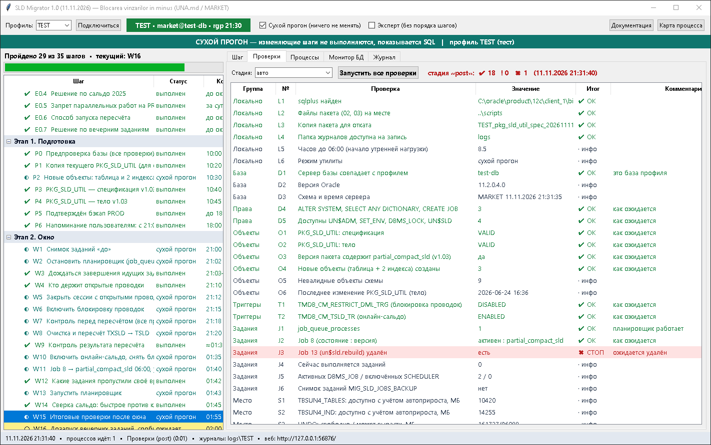
Все шаги пройдены
Статусы: ✔ выполнен, ◐ сухой прогон.

Откат
Шаг отката доступен в любой момент. В сухом прогоне показывает, что именно будет выполнено.
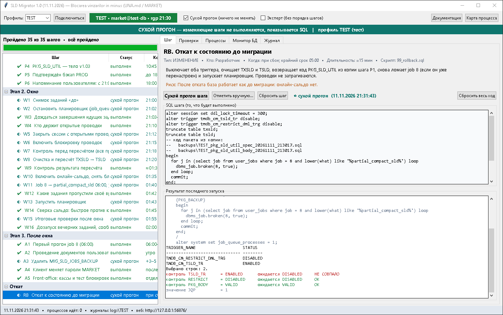
Вкладка «Журнал»
Хронология всех действий. Полный вывод каждого запуска сохраняется в папке logs.
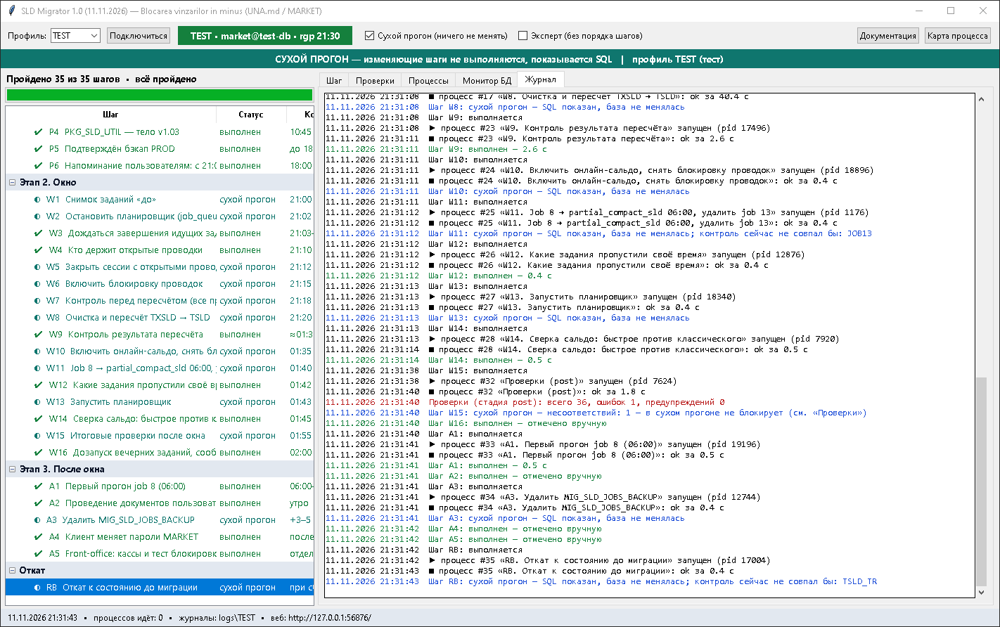
Карта процесса после прогона
Все шаги отмечены, внизу — процессы и состояние базы.
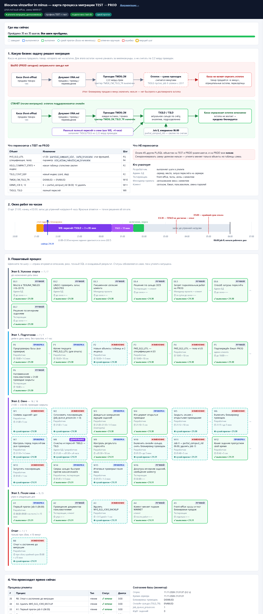
Режимы
| Режим | Что делает | Как включить |
|---|---|---|
| Сухой прогон | Проверки выполняются. Изменяющие шаги показывают SQL и выполняют только контрольный запрос. Вместо пересчёта — имитация на 40 секунд. | включён по умолчанию |
| Боевой | Шаги реально меняют базу. Каждый изменяющий шаг спрашивает подтверждение. | снять флажок «Сухой прогон»; на продуктивной базе нужно ввести слово PROD |
| Эксперт | Разрешает выполнять шаги не по порядку. | флажок «Эксперт» |
Частые вопросы
Можно ли что-то сломать сухим прогоном?
Нет. В сухом прогоне выполняются только запросы на чтение.
Что будет, если закрыть окно во время длительного шага?
Сеанс прервётся, незавершённая транзакция в базе откатится. Пересчёт придётся запускать заново.
Где пароль?
Только в памяти программы до закрытия окна. В файлы, журналы и командную строку он не попадает.
Как откатить?
Шаг «Откат» в конце списка. Он возвращает код пакета из копии, снятой шагом P1, очищает таблицы сальдо и выключает триггеры. Проводки не затрагиваются.
Что проверено, а что нет?
На тестовой базе пройден весь процесс в сухом прогоне: подключение, проверки, копия и сравнение пакета, контрольные запросы всех шагов, сверка сальдо (75 строк, расхождений 0). Изменяющие шаги в боевом режиме не выполнялись.
Где подробности?
Полная документация — 13 разделов: настройки, проверки, мониторинг, откат, типичные ошибки. Карта процесса — схема со всеми шагами и SQL.